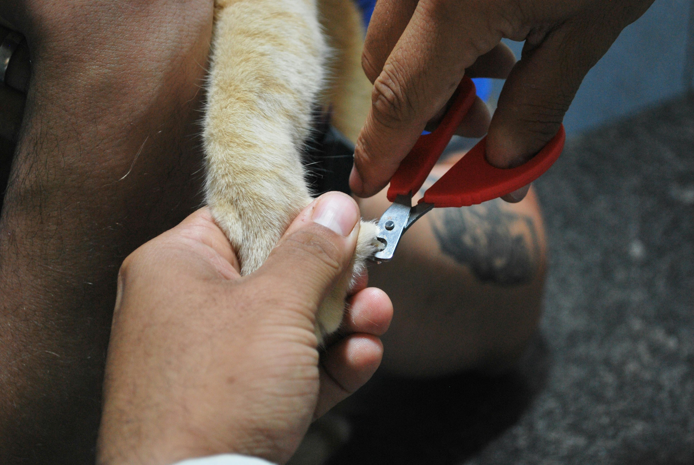
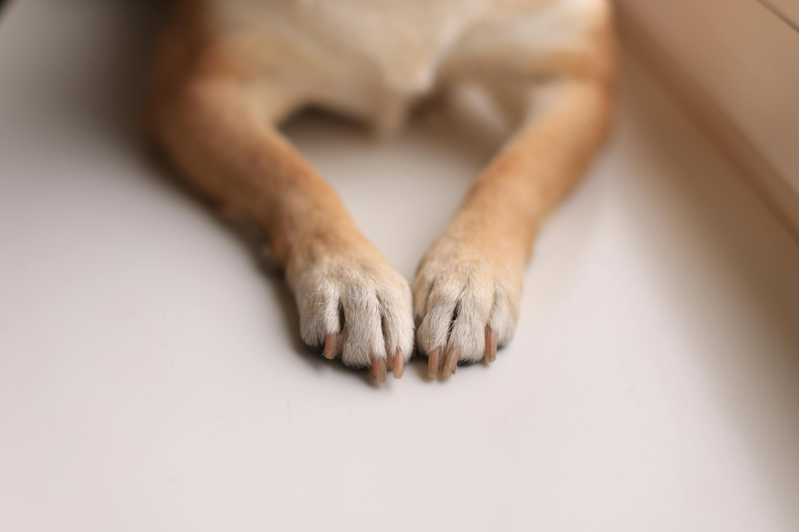

Nail Clipping Services

NAIL CLIPPING
HEALTHY NAILS FOR HAPPY PETS
At WhiskerWash, we understand that regular nail clipping is essential for your pet's physical and mental health. That's why we offer professional nail clipping services to ensure your furry friend gets the care they deserve.
Our experienced groomers provide reliable and caring nail clipping services tailored to your pet's individual needs. Whether they prefer a gentle trim or a thorough nail care session, we'll ensure they get the perfect amount of care to keep them happy and healthy.
Regular nail clipping helps prevent pain, discomfort, and potential injuries in pets. Our groomers are trained to handle dogs and cats of all breeds and temperaments, ensuring their safety and comfort during every nail clipping session.
Every nail clipping session includes fresh water and a photo update, so you can rest assured your pet is well-cared for while you're away.
OUR NAIL CLIPPING SERVICES INCLUDE:
1. PERSONALIZED NAIL CLIPPING SESSIONS
Whether your dog prefers a quick nail trim or a more thorough nail care session, our experienced groomers tailor each session to their individual needs. We ensure they get the perfect amount of care to keep them happy and healthy.
2. Gentle Handling
Your pet's safety is our top priority. Our groomers are trained to handle dogs and cats of all breeds and temperaments, ensuring a secure and positive experience. We use gentle techniques and always stay aware of our surroundings to keep your furry friend safe on every nail clipping session.
3. HEALTH & WELLNESS MONITORING
During each nail clipping session, our groomers monitor your pet's behavior and well-being. We look for any signs of discomfort or health concerns, ensuring they stay happy and healthy during their nail clipping session. Any observations are reported back to you, providing peace of mind while you're away.
4. QUICK CLEAN-UP & HYDRATION
After each nail clipping session, we provide a quick clean-up and ensure your pet has fresh water to rehydrate. This attention to detail ensures they return home comfortable, refreshed, and ready for a nap.
5. PHOTO UPDATES
Receive photo updates during the nail clipping session to see your pet enjoying their nail clipping session. These snapshots capture their happy moments and ensure you stay connected while you're away.



Why Choose Us?
• Professional Nail Clippers:
Our team of skilled and experienced groomers is dedicated to providing top-notch care for your pets. Trained to handle all breeds and temperaments, they ensure a safe, gentle, and stress-free nail clipping experience tailored to your pet's unique needs.
• Gentle Handling:
Your pet's safety is our top priority. Our groomers are trained to handle dogs and cats of all breeds and temperaments, ensuring a secure and positive experience. We use proper techniques and always stay aware of our surroundings to keep your furry friend safe on every nail clipping session.
• Health & Wellness Monitoring:
During each nail clipping session, our groomers monitor your pet's behavior and well-being. We look for any signs of discomfort or health concerns, ensuring they stay happy and healthy during their nail clipping session. Any observations are reported back to you, providing peace of mind while you're away.